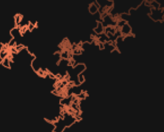

Buffon's Needle
Calculating Pi using needles and probability.
Montecarlo
Using chance to calculate areas.

Brownian Motion
Short description and animation of Brownian Motion
Self similar fractals 1
Seeing self similar sets.